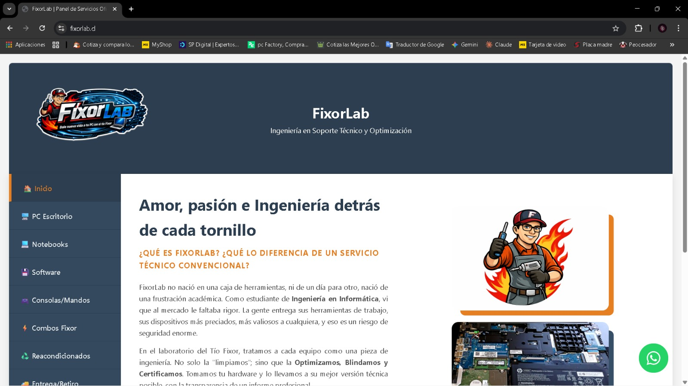
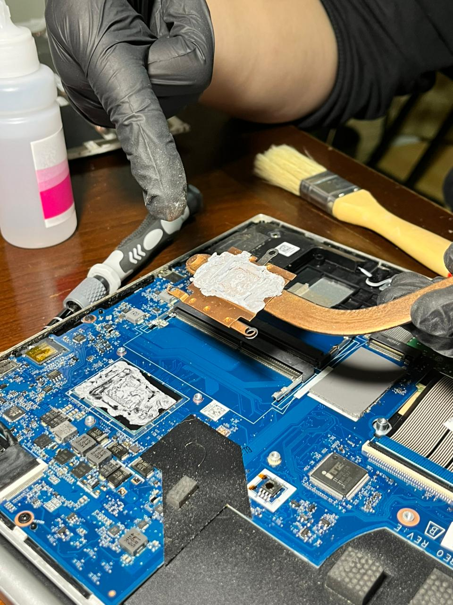
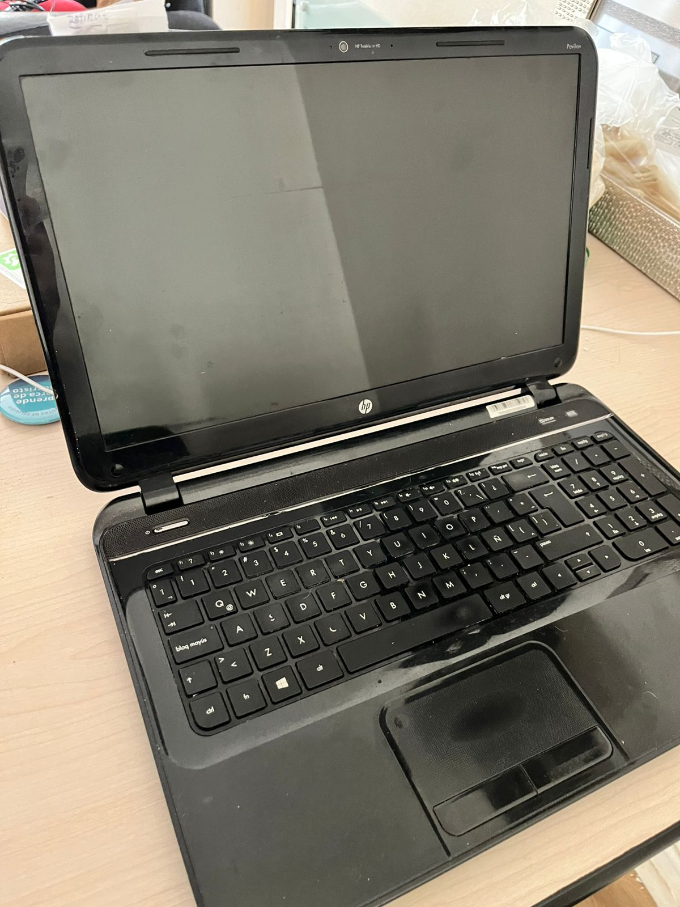
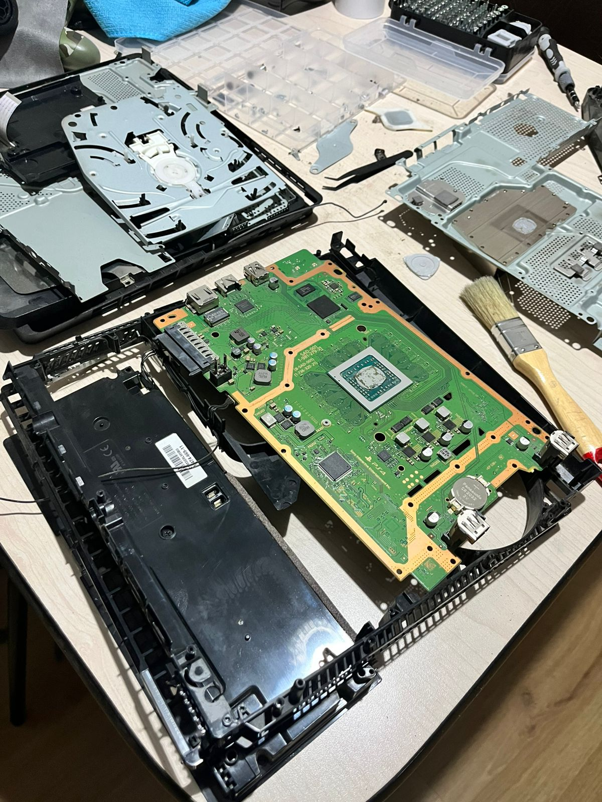
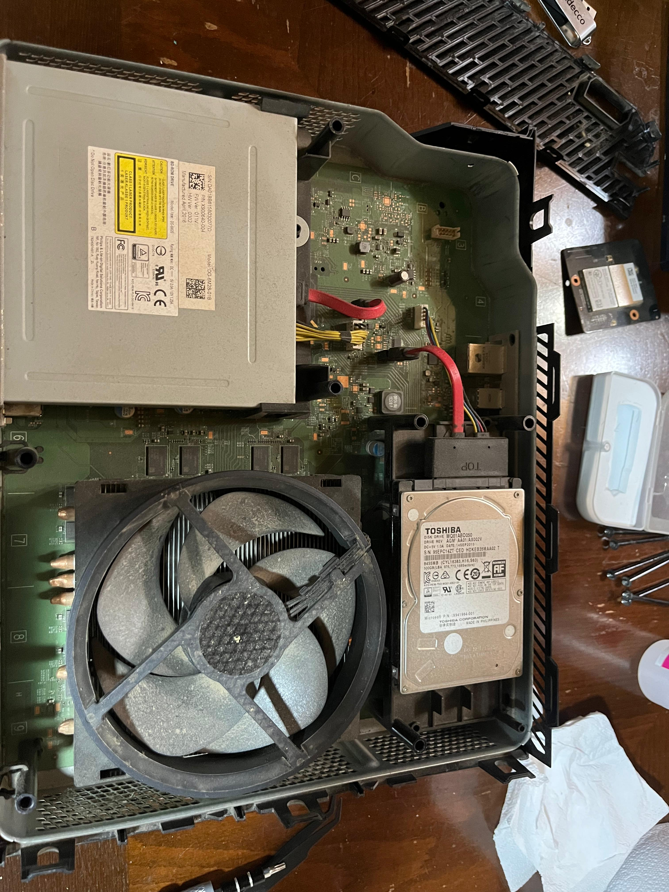
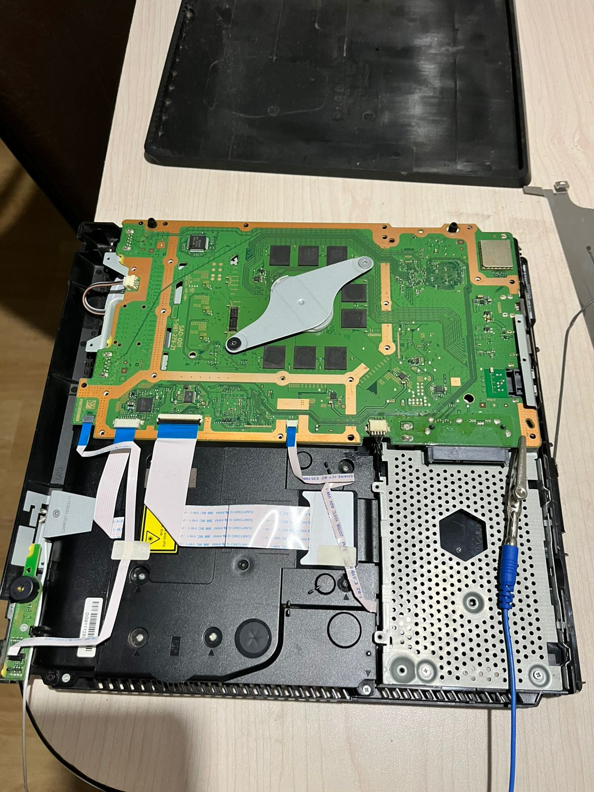

Soy un apasionado por la tecnología y fundador de FixorLab. Actualmente curso mi carrera en INACAP y me especializo en el mantenimiento técnico de hardware, optimización de sistemas y, ahora, comparto un poco de mis conocimientos en el desarrollo de interfaces web modernas y funcionales.
Hola, soy Angelo Martínez
Estudiante cursando segundo año de Ingeniería en Informática
Conóceme un poco más
Sobre Mí
Mi nombre es Angelo Martínez y soy el fundador de FixorLab. Actualmente curso segundo año en INACAP.
Me apasiona la tecnología y me especializo en el mantenimiento de hardware y la optimización de sistemas. Mi objetivo es entregar soluciones técnicas precisas.
«La calidad nunca es un accidente, siempre es el resultado de un esfuerzo inteligente.»
Habilidades
Tecnologías y competencias
| Tecnología | Nivel | Dominio |
|---|---|---|
| HTML5 | Intermedio | Estructura semántica [cite: 6] |
| CSS3 | Intermedio | Flexbox y Grid [cite: 7] |
| Mantenimiento de PC | Avanzado | Hardware y Optimización |
| Git/GitHub | Intermedio | Control de versiones [cite: 6] |
Competencias Técnicas
- Maquetación responsiva [cite: 119]
- Control de versiones con Git [cite: 121]
- Diseño con Flexbos y Grid [cite: 122]
- Optimización de sistemas operativos
Ruta de Aprendizaje
- HTML5 y CSS3 (Actual) [cite: 125]
- JavaScript ES6+ [cite: 126]
- React.js [cite: 127]
- Node.js y Express [cite: 128]
Algunos de mis trabajos
Proyectos

Mi Primer Portafolio
Desarrollo web inicial con HTML5 y CSS3.
Ver evidencia de FixorLab →
Mantenimiento FixorLab
Optimizacion completa y cambio de pasta térmica en notebook.
Ver publicación →
Primer testeo de computador
Primera vez chequeando el funcionamineto optimo de un notebook.
Ver más en FixorLab →
Armando una Ps4 desde cero
Armando una Ps4 juntando pieza por pieza.
Ver más en FixorLab →
Mantenimiento Xbox
Mantenimiento y optimización de una Xbox One.
Ver más en FixorLab →
Mantenimiento de Ps4
Mantenimiento, limpieza y optimización de una Ps4 Slim
Ver más en FixorLab →